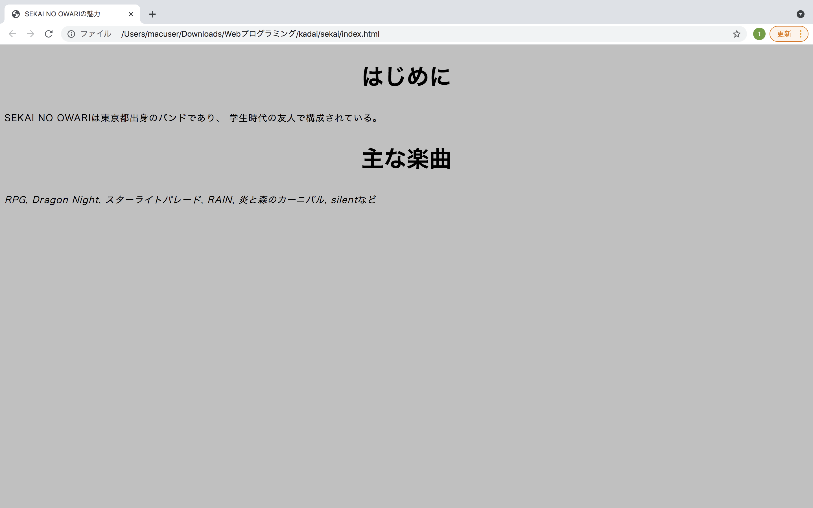
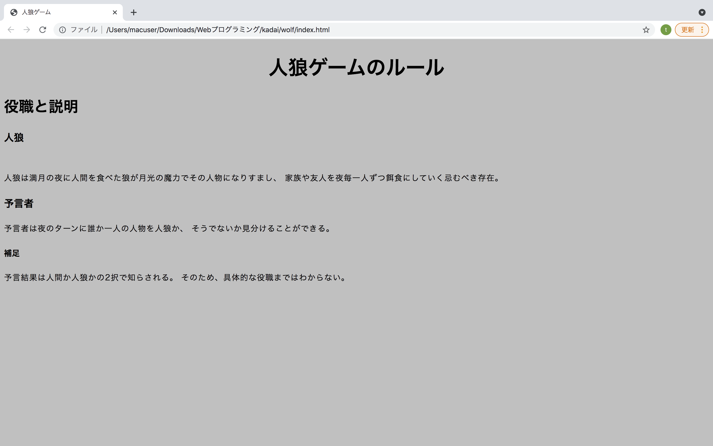
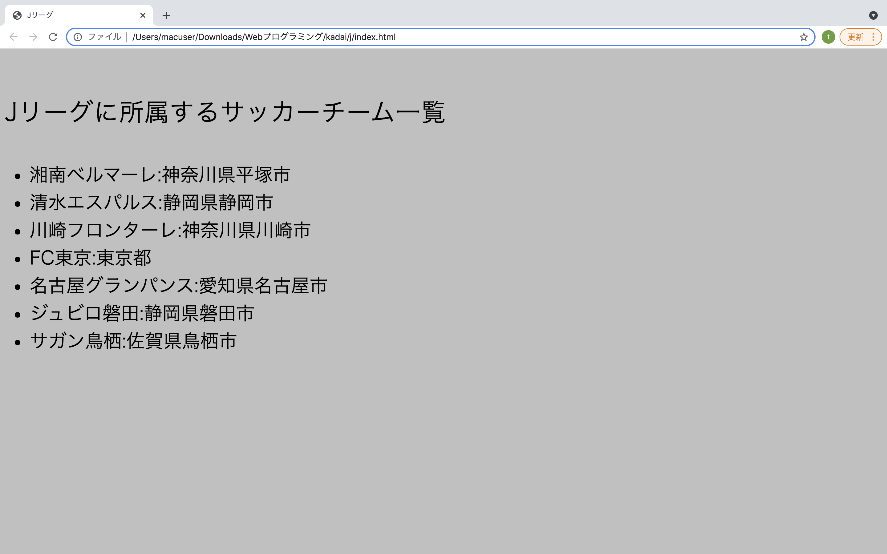

title要素は、ドキュメントのタイトルを表すものである。 検索結果や履歴、ブックマークなど本文以外で使用されている場合でも、 ドキュメントを識別する必要がある。 ドキュメントのタイトルは、最初の見出しとは異なることがよくある。 また、ドキュメントごとに1つのタイトル要素が存在する。
<title>SEKAI NO OWARIの魅力</title>
...
<h1>はじめに</h1>
<p>SEKAI NO OWARIは東京都出身のバンドであり...
<h1>主な楽曲</h1>
<p>RPG, Dragon Night, スターライトパレード...
画像左上にSEKAI NO OWARIの魅力とあるようにタイトルを表示することができた。
これらの要素は、セクションの見出しを表す。 見出しがあることで、メインタイトル、サブタイトルなどに扱う。 h1からh6までの6段階見出しが存在するが、よく使うのはh3からh4までである。
<body>
<h1>人狼ゲームのルール</h1>
<h2>役職と説明</h2>
<h3>人狼</h3>
<p>人狼は...</p3>
<h3>予言者</h3>
<p>予言者は夜のターンに...</p>
...
h1要素はセンターに寄せられているが、h1要素、h2要素、h3要素で それぞれ見出しになっていることがわかった。
ul要素は順序なしリストであり、お買い物リストのようにアイテムの順番に関係がない時に使用する。 一方で順序付きリストにはol要素を用いる。
<p>Jリーグに所属するサッカーチーム一覧</p>
<ul>
<li>湘南ベルマーレ:神奈川県平塚市</li>
<li>清水エスパルス:静岡県静岡市</li>
<li>川崎フロンターレ:神奈川県川崎市</li>
<li>FC東京:東京都</li>
</ul>
結果として、順序のないリストを作成することができた。 チームの一覧に順序は設けていないので、箇条書きのように羅列した。 例えば、Jリーグの順位表であれば、順序がある。 したがって、順序付きのリストを作成する方が望ましい。
